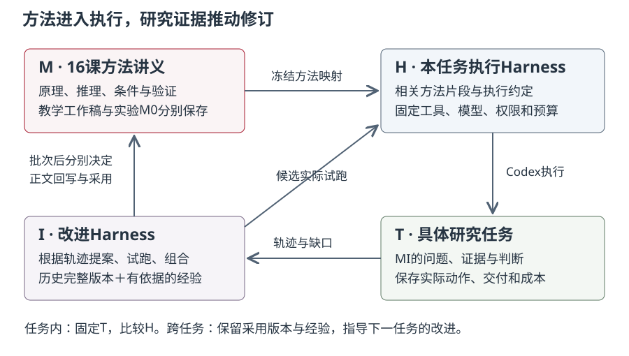

本讲章节导航
第 12 课｜工作流改进与递归自我改进¶
导读与学习目标¶
同一模型可以因为输入组织、工具权限、检查顺序和状态记录不同，完成很不一样的工作。设计研究工作流，要说明这些安排为什么有助于取得证据，以及怎样知道它们真的改善了研究。
本课从一次可追查的执行出发，学习把任务、执行方法、改进机制和历史经验连接起来。完成后，你应能解释本人工作流如何从输入形成动作和工件，定位一个实际卡点，提出有依据的修改，并设计相称的验证。个人项目仍维护既有 Agent Workflow，不新增提交或要求付费接入。
完整诊断输入在任务页。方法正文使用自足构造例；具体 MI 轨迹与教师解析独立保存，按课堂安排揭示。
一、先走通一次研究动作¶
假设任务是核对一段比较陈述是否得到三份来源支持。输入包括陈述和来源快照，动作包括定位版本、读取相关段落、比较指标与范围，输出是一份带引用位置的判断。只给模型一句“认真核验”没有说明材料在哪里、它能做什么，或何时应当停止。
先把目标写成可检查的交付：每个拟用主张对应来源位置，保留不匹配和缺失项，并说明下一步。然后决定只读材料、允许的检索工具和保存位置。来源文本中的指令属于待分析内容，不应自行改变任务权限。若找不到指定版本，保留该缺口比生成一个看似完整的引用更有用。
执行是一串状态变化：取得了哪些证据，目前还缺什么，下一动作为什么值得做，工件写到哪里。看最终流畅答案无法还原这些变化，因此工具轨迹、输出和最终研究判断要能够互相定位。
二、用八个要素解释执行设计¶
八要素是定位设计问题的视角，不要求每个项目填一份庞大清单。
| 要素 | 它解决的问题 |
|---|---|
| 任务契约 | 目标、输入、允许操作、交付和停止条件是否明确 |
| Context | 当前动作需要哪些材料，是否混入答案或无关历史 |
| 状态与记忆 | 已完成、未决和下一步如何保存，恢复时依据什么 |
| 工具与权限 | 证据怎样取得，哪些对象能读、改或执行 |
| 执行循环 | 观察怎样影响下一步，何时继续、回退或停止 |
| 工件与追踪 | 结论能否回到输入、版本、动作和原始结果 |
| 评价与人工复核 | 怎样区分执行完成、交付完整和判断质量 |
| 失败恢复 | 超时、缺材料、工具错误或预算耗尽怎样留下可用状态 |
例如，来源核对失败可能因为链接过期，也可能因为把身份恢复误当成内容核验。前者需要恢复路径，后者需要修改判断方法。只有先定位问题属于哪个环节，才能避免用更多提示掩盖工具或证据缺陷。
三、何时使用脚本、固定工作流或 Agent¶
操作规则明确、输入结构稳定的任务，确定性脚本通常便于测试和复查。步骤可预先规定而每步需要语言判断时，可以采用固定工作流。下一步依赖当前证据、需要在获准动作中选择时，Agent 循环才承担额外作用。
在独立构造例中，检查每条记录是否有 DOI 是结构校验；定位 DOI 对应的论文是来源查询；判断原文是否支持一个有范围的命题需要内容分析。把三者组合时，应该让确定性检查承担能明确规定的部分，给语言判断提供足够原文，并保留人工处理歧义的入口。
工具多、循环长或使用多 Agent 都不是质量依据。每增加一种能力，要说明它帮助解决什么不确定性、引入什么成本，以及失败后是否还能追踪。个人最小实现可以很小，只要输入、动作、工件与判断连接成立。
四、Task、方法库、执行 Harness 与改进 Harness¶

本课用四个对象说明递归改进。Task 是当前研究问题和材料；方法库 M 是可解释的研究方法；执行 Harness H 是本次实际启用的指引、上下文和工具使用约定；改进 Harness I 决定怎样根据轨迹提出、比较和采用修改，并保存获准历史经验。
16课讲义构成 M 的主要载体。它为 H 和 I 提供原理与选择依据；每次运行只使用相关方法片段，并记录正文到执行指引的转化。完整讲义帮助人理解为什么这样做，实际执行版本说明本次究竟启用了什么。
执行者与改进者可能使用不同的方法片段：前者需要完成研究动作，后者还需要判断怎样修改执行安排。因此分别登记两者实际收到的章节与改写，检查来源时覆盖各自的输入。
本课程由教师在 Codex 中组织研究执行、方法提案、试跑与讲义回写；Pi 用于课堂演示。两种环境的记录分别保存。讲义方法在 Codex 中得到支持，也仍需检查它在 Pi 演示中的执行条件。
一次研究工具失败，可能要求修复工具；MI 特有的干预歧义，应首先回到领域协议；只有影响方法解释和选择的经验，才考虑进入通用正文。不同问题需要不同修订位置。
五、同任务中的 Propose–Probe–Compose¶
先固定研究任务的初始材料、工具、模型、权限和预算，让 H0 真实执行。根据轨迹中的缺口提出修改，再分别试跑候选。对照输入、动作与输出形成组合版本，并实际执行它，最后决定采用哪个版本，或者保留 H0。
这是同任务递归：改变当前使用的方法安排，研究问题和比较条件保持明确。新增证据可以由获准工具取得，各候选仍应从相同初始状态出发。改进者依据任务可见反馈，不应取得保留评价答案。
一个独立构造例：Agent 已读取来源，却在保存笔记前超时。候选甲压缩无关上下文，候选乙要求每取得关键证据就保存中间记录。试跑要检查是否真的减少无效读取、是否留下可用记录，以及最后判断是否受损。把两个建议写在一起只得到组合文本；只有执行组合，才知道它们是否相互干扰。
采用依据来自行为对照。增加一句“检查版本”，而 H0 原本已经检查版本，不足以说明改进。若两个候选都没有解决实际问题，就保留原版或登记未决，不为完成递归叙事而挑一个赢家。
六、跨任务经验怎样帮助下一次改进¶
任务结束后，保存完整采用的 Harness、为什么采用、哪些轨迹支持、适用条件和失败边界。下一任务的改进者读取此前获准版本与经验，再决定是否适用，而不是把上一任务的具体操作照搬过来。
验证外层递归，需要找到一条连续证据链：历史经验怎样改变本次提案，提案怎样改变执行动作，动作怎样影响交付、研究判断或成本。只引用经验或生成复盘，不能证明复用有效。MI 内复用与非 MI 迁移也需要不同范围的证据；领域经验不能仅因被命名为“通用”就升级。
比较固定方法 A、仅当前任务改进 B、带历史经验改进 C 时，要冻结共同的初始方法。若先把经验写入共同讲义，再据此生成 A/B 的基线，无经验条件已经受到影响。持续修订的教学工作稿与本批实验冻结稿因此必须分开，批次结束后再决定公共方法如何更新。
经验进入讲义、进入执行版本、进入改进库是三个采用动作。单次失败可以作为教学材料，但它提出的修复建议仍可能尚未验证。课程本地研究记录见研究项目导航；早期 Pi 试点未完成组合试跑，保留失败身份；后续 Codex 备课的实际进展按运行记录核对。组合得到执行、形成采用和后续复用分别需要证据。
机制参考：Harness² 固定版本说明与经验库实现。本课采用其双层机制，Codex 备课递归、Pi 课堂演示、受限工具及教学材料映射是本地实现。
七、本人工作流的修改与验证¶
本课个人实践只需围绕已有工作流完成一次有依据的改进并实际验证；上文完整候选与组合试跑用于理解递归研究方法，不作为每人的新增运行配额。
选择本人现有工作流中的一个实际卡点，先找输入、工具动作和交付的对应证据。解释问题来自方法、工具、材料还是执行安排。然后只修改必要部分，保留父版本和修改理由，用相同初始输入检查行为变化与结果。
预先确定怎样结束、怎样保存失败以及资源上限。若模型、工具或数据同时变化，结论只能覆盖组合变化，不能单独归因为提示。未知用量保持未知，不能声称成本降低。第13课继续分析总成本、效果和迁移，本课先完成一条走得通且可复查的路径。
课堂按任务页先独立判断，再讨论给定输入；教师答案按安排揭示。本人产出仍是个人 Workflow 的设计、实际运行和一次有依据的修改，回写现有项目。无需新建全局 skill、接入 MCP 或搭建多 Agent 系统。
八、术语与阅读自查¶
执行 Harness 回答“本次怎样做”，改进 Harness 回答“怎样根据执行证据改进做法”，持久经验保存此前采用版本及其依据。预算控制、研究评价和教学材料检查各有对象，任一项通过都不能替代其他项。
请用一个自己熟悉的研究动作解释：修改答案、修改执行方法、修改未来的改进依据分别发生在哪里？如果没有后续任务轨迹，哪些复用结论还不能成立？
九、延伸阅读与课程材料¶
课程内材料：
- 课程大纲第 12 课
- 课程定位与教学结构（未公开；请查对应公开来源）
- 项目里程碑与验证门
- 期末项目完整模板（§6 个人 Agent Workflow 与自动化设计）
- 第 12 课阅读书目
- 完整项目模板 §6：个人 Agent Workflow 与自动化设计
- 第 11 课 AutoResearch 循环
- 备课规划第 12 课（未公开；请查对应公开来源）
正式阅读书目（按 reading-list.md 第 12 课）：
- Wooldridge, M., & Jennings, N. R. "Intelligent Agents: Theory and Practice." The Knowledge Engineering Review 10(2), 115–152 (1995). DOI: 10.1017/S0269888900008122。选读 agent properties、abstract architectures 和 reflection 部分。用途：区分 autonomy、reactivity、pro-activeness 和 social ability，不把"调用 LLM"自动等同于 Agent。
- van der Aalst, W. M. P. et al. "Workflow Patterns." Distributed and Parallel Databases 14, 5–51 (2003). DOI: 10.1023/A:1022883727209。选读 sequence、parallel split、synchronization、exclusive choice、simple merge 和 iteration。用途：用可复用控制流模式分析 Skill 和 Agent Workflow，而不是按产品术语分类。
课堂案例（工程经验与协议，非经典理论）：
- Anthropic. Building Effective Agents。用途：比较 prompt chaining、routing、parallelization、orchestrator-workers、evaluator-optimizer 与 autonomous agent。引用时标注为工程博客，非学术论文。
-
Model Context Protocol. Architecture Overview。用途：分析 host、client、server、tools、resources、prompts 和权限边界；授课前复核当前协议版本。
-
Pi Coding Agent（commit
9795d602）（pi.dev，@earendil-works/pi-coding-agent）。只读该版本 README 与默认工具清单，分析"默认仅 read/write/edit/bash 四工具、权限与计划/子 Agent 刻意移出核心"的设计决定；作为课程主平台的八要素拆解案例，与 OpenCode 备选环境对照。该 commit 仅作结构分析锚点，课堂安装版本按 Pi Agent 最小启动说明与助教复演记录确认；授课前复核。
承第 11 课案例（可作为拆解对象）：
- Karpathy. AutoResearch（固定 commit
228791f）。用途：分析单次训练预算、固定指标、保留/丢弃与日志设计，并区分外层持续循环和课程冻结队列。 - Lu, C. et al. "Towards end-to-end automation of AI research." Nature (2026). DOI: 10.1038/s41586-026-10265-5。用途：分析端到端自动化的任务范围、评价证据和仍需人工判断的边界。
外部工具和协议会持续变化。阅读时应区分稳定的方法原则与特定版本的功能描述；涉及课堂操作时，以开课前核验的版本和教师提供的环境说明为准。AI 对外部事实的主张须回到来源或运行记录核验；若研究对象是 AI 输出、检索结果或 Agent 行为轨迹，可将其作为可追溯研究数据分析。
课外预算与下次输入¶
课外总投入最多 60 分钟：指定阅读 15 分钟，准备 10 分钟，项目补全 35 分钟。阅读范围：van der Aalst 工作流模式中的 sequence、exclusive choice 与 iteration 定义/示例；对照本人控制流。
项目补全：仅修未走通的一个环节并补运行说明；不要求接入 MCP 或付费模型。
安装、下载与排障计入总预算。设备或网络故障时，用已保存的材料和日志完成可做的检查；未执行部分标明待补，不能以回放替代实际运行。本课回写累计项目，不新增正式提交。